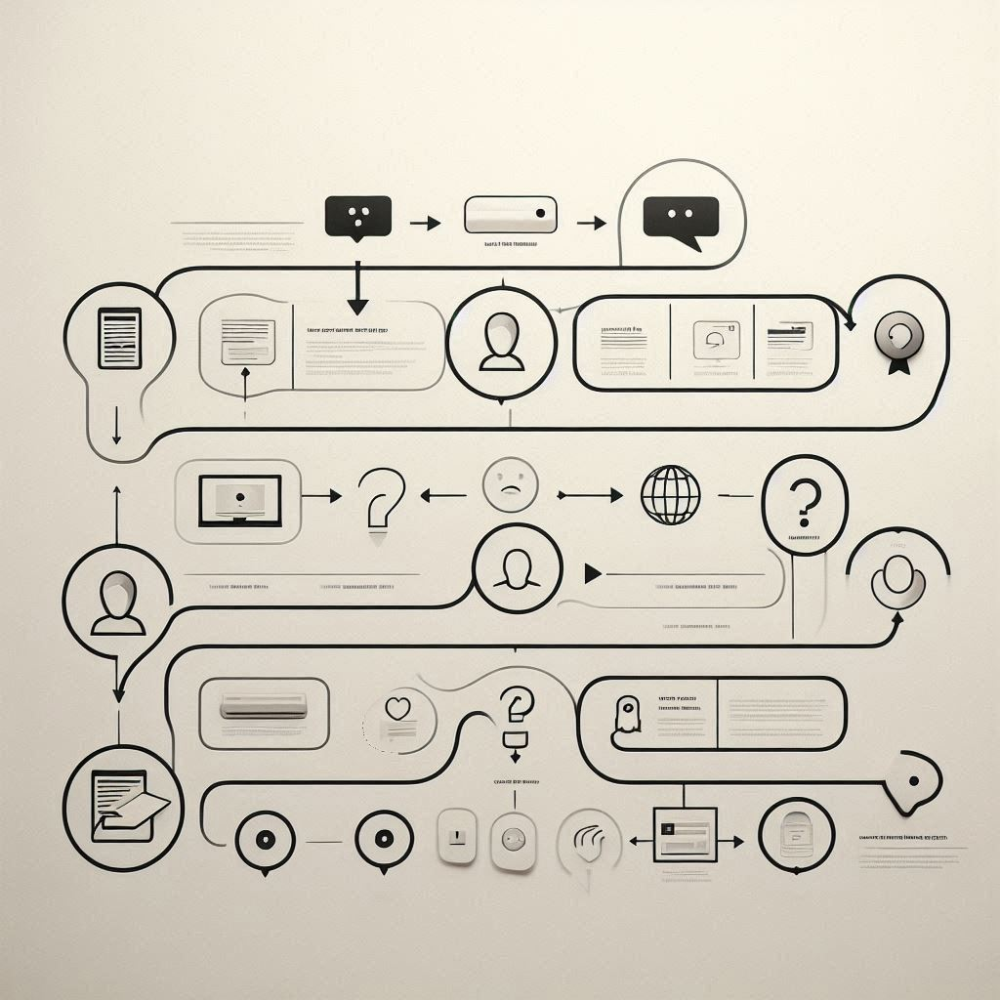
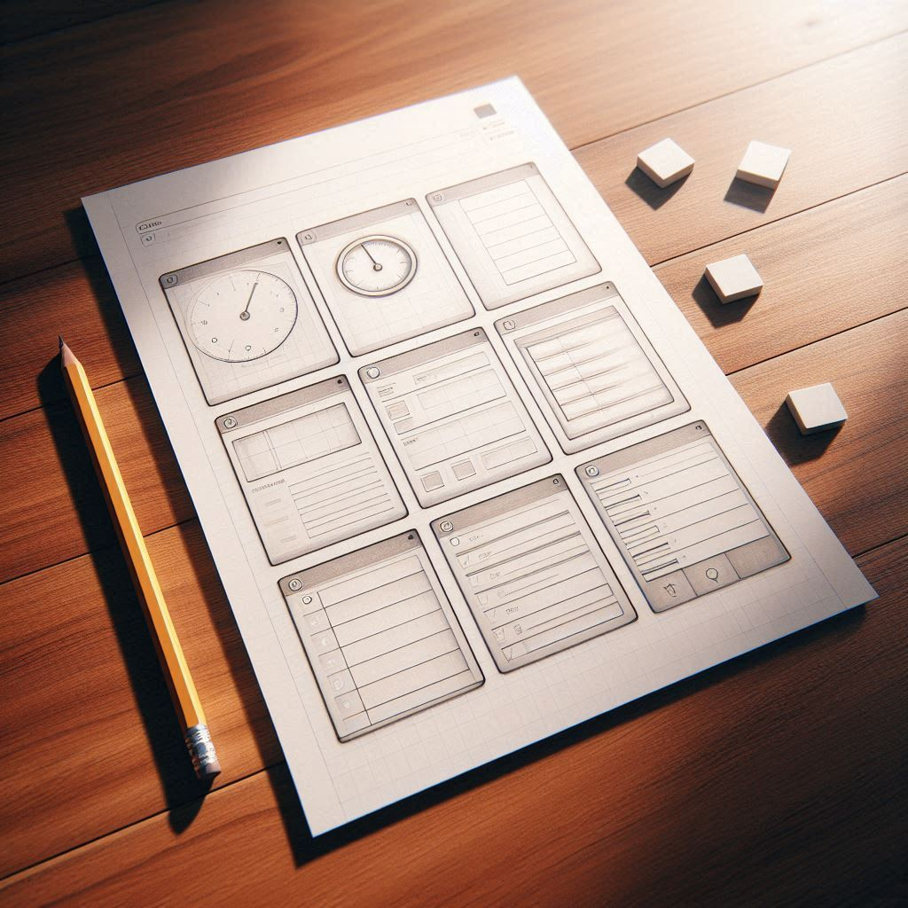
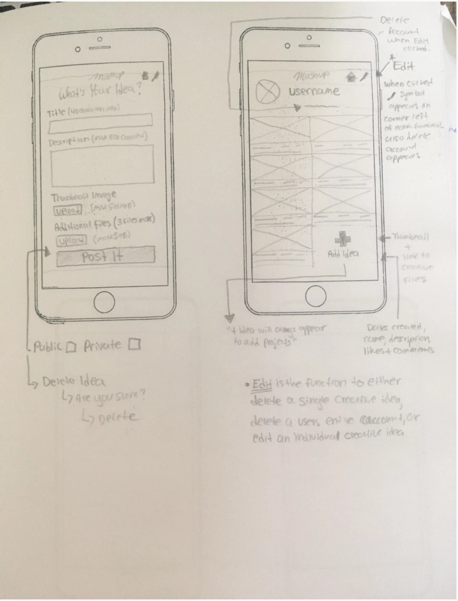

Um estudo de caso de UX Design focado em ajudar usuários a entenderem e melhorarem suas finanças.
Minha Função: UX Designer (Pesquisa, Ideação, Wireframing)
Duração: Janeiro 2026 - Presente
Muitos usuários têm dificuldade em entender os fatores que afetam sua pontuação de crédito e acham complexo comparar ofertas de cartões com taxas de juros baixas.
Projetar um aplicativo de gerenciamento de crédito que permita aos usuários acompanhar sua pontuação e simular cenários financeiros de forma clara e educativa.
Realizei entrevistas com usuários e criei mapas de empatia para entender as necessidades. Descobri que os usuários variam de jovens estudantes a profissionais estabelecidos.
Criei duas personas principais para guiar o design:
Ocupação: Dono de Empresa
"Preciso expandir meu estoque sem me endividar com juros altos."
Ocupação: Chef e Estudante
"Quero controlar cada centavo para pagar meus estudos."
Declaração de Problema: Carlos é um pequeno empresário ocupado que precisa de uma maneira fácil de analisar opções de crédito, porque ele quer expandir seu negócio com segurança.
Mapeei a jornada atual do usuário para visualizar os pontos de dor e frustração no processo atual.

Utilizei a técnica "Crazy 8s" no papel para gerar rapidamente várias ideias de layout antes de ir para o computador.

Criei a estrutura digital (esqueleto) das principais telas do aplicativo: Dashboard, Simulador e Lista de Cartões.
